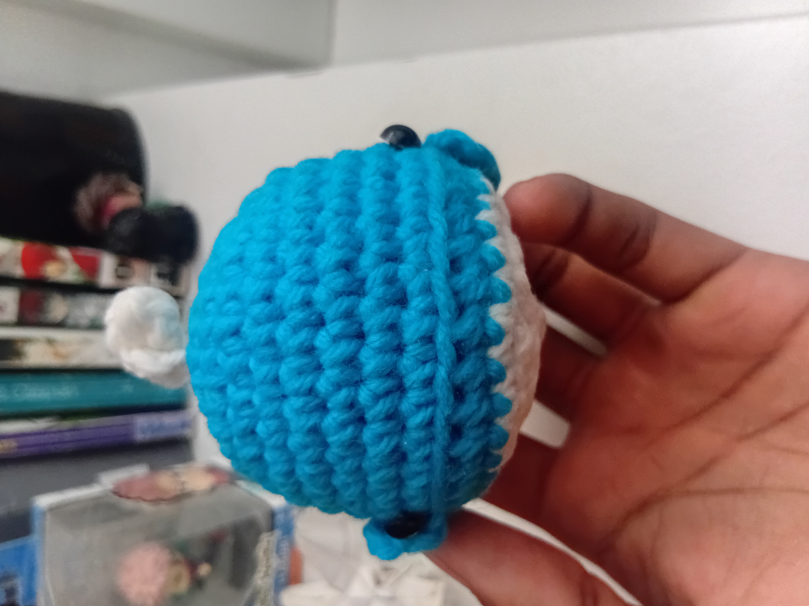
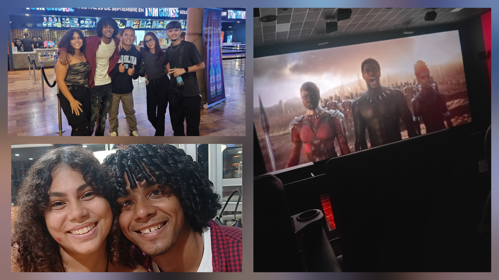
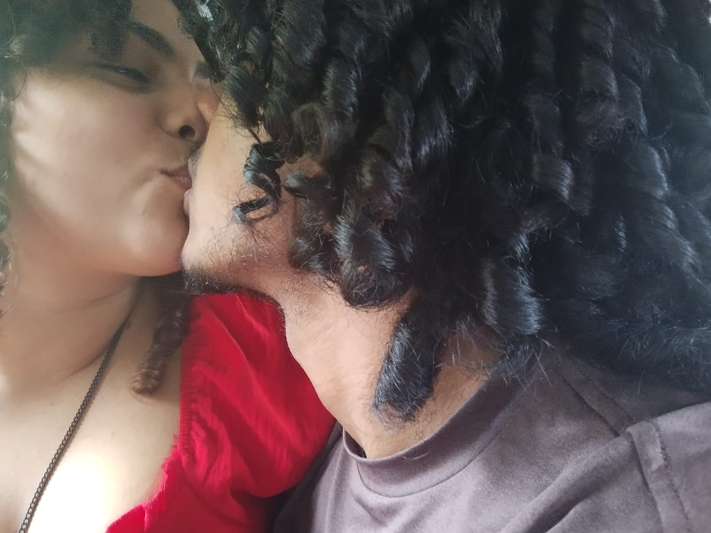
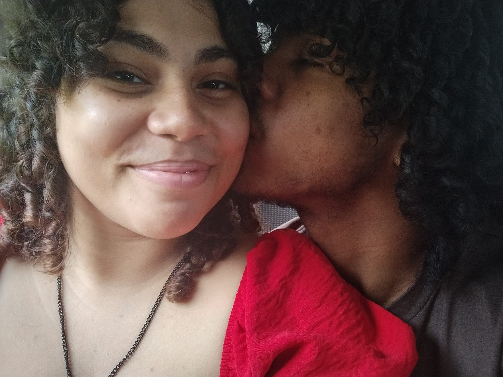

UN REGALITO HECHO PARA TI
MY LOVE FOR YOU IS ETERNAL
Hice esto pensando en ti, mi amor. ♡
BIENVENIDA A NUESTRO MUNDO
HOLA, MI AMOR ♡
Acho, quería hacerte algo especial...
Se me ocurrió crear esta pequeña página para ti. Aquí quiero guardar cositas nuestras, recuerdos, mensajes y muchas otras cosas que quiero compartir contigo.
DESCUBRE NUESTRO MUNDO ↓CAPÍTULO 01
NUESTRA HISTORIA ♡
Porque todo lo bonito tiene un comienzo...
Nuestra primera salida
Quién diría que aquella salida al cine terminaría convirtiéndose en uno de los recuerdos más bonitos que tengo contigo. Fue uno de esos días que siempre voy a recordar con mucho cariño. Aunque Pfffuaaaa, no voy negar que sin duda alguna mi dia favorito fue cuando te me confese e iniciamos nuestra relación de forma oficial.
El comienzo de nosotros
Y llegó el día en que comenzamos nuestra relación. Desde entonces tengo a alguien con quien compartir mis días, mis pensamientos y un montón de cosas bonitas.
CAPÍTULO ESPECIAL ♡
EL DETALLE MÁS BONITO
Hay regalos que significan mucho más de lo que imaginamos...

El detalle más bonito que nunca antes me habían dado. ♡
No es solamente el regalo, sino lo que significa
para mí que hayas tenido ese detalle conmigo.
Es algo que voy a guardar con muchísimo cariño,
porque viene de ti.
Como dato curioso, desde que le heche tu perfume. la ballena huele a ti, QUE DELICIA SLM, me hace sentir tan comodo y acompañado, literalmente te siento a mi lado cuando la huelo.
OUR STORY ♡
MY LOVE STORY
Every little moment brought us here. ♡
Y todo comenzó...
Gracias a Threads, el 17 de septiembre fue el día en el que conocí a la chica que en el futuro no tan lejano iba a ser mi hermosa pareja.
Me acuerdo que todo empezó con un "Wepa🇵🇷" en las notas temporales de Threads.
Me acuerdo que ese día me dio con responderle a esa nota temporal que me salio en threads con un "WEEEEPA!🇵🇷🗣"
Y pues ella me responde no tanto rato después con un"Q tall??"
Y yo le escribo "Todo bien, Gracias! Y tu?
Y adivina que, KSJSJSJSJ no me volvió a responder, y yo pensé que era pq se le olvido o algo asi so yo vengo y le escribo en privado verdad pq uno nunca sabe
Y pues nada, le escribo por privado y empezamos a hablar JAJAJA.
Me acuerdo que empezamos preguntándonos cómo estábamos y qué hacíamos.
Ella me responde que todo bien y yo le digo que también, que acababa de llegar de la uni y que estaba cansado. KSJSJSJSJ, uno no puede con tanto estudio.
Después me pregunta qué estaba estudiando y yo le digo que programación. Y ella me responde un "WOOOWW!" y un "Q cool". JAJAJAJA.
Luego me cuenta que ella estaba estudiando Pet Grooming y que cuando se graduara quería estudiar para asistente de veterinaria. Y yo obviamente le digo que qué bonito y le pregunto si le gustaban mucho los animales.
Y ADIVINA QUÉÉÉ, resulta que sííí JAJAJA. Me cuenta que tenía 7 gatos y un perro. También me dice que antes tenía conejitos, pero que se le habían muerto.
Yo le cuento que a mí también me encantan los gatos, que tenía 2 perros y que tenia un gato que se llamaba Pablo (dato curioso, estaba en casa de abu el gato y se escapo y abu no sabe na de el).También le cuento que tuve un conejito, pero que lamentablemente también se me murió.
Por ahí le comparto una fotito de un gatito y ella me responde que son unas preciosuras. AYYYY, JAJAJAJA, ya teníamos tema de conversación con los animalitos.
Y bueno, por cierto, me había quedado dormido un ratito. La uni estaba media fuertesita oye, KSJSJSJSJ.
Y pues nada, después de hablar un poquito de nuestras cosas, salió el tema de la música. Le pregunté si le gustaba alguna banda en específico y me dijo que SÍÍÍ, que le gustaban varias bandas.
Me mencionó System Of A Down, Linkin Park, Breaking Benjamin, Red, Bullet For My Valentine, My Chemical Romance, I Prevail, Slipknot, Corpus Christi, Suicide Silence, A Day To Remember y más. KSJSJSJSJ. La verdad son muchas más, pero la cosa es que todas son muy buenas,todas JAJAJA.
Y pos resulta que a mi también me gustaba el rock. Asi que le conté que me encantaban Breaking Benjamin, System Of A Down y Linkin Park, entre otras. También le mencioné Skillet y Evanescence.
Y yo le pregunté cuáles eran sus favoritas y ella me preguntó por las mías. Le dije que me gustaban muchísimo Three Days Grace, Thousand Foot Krutch, Fall Out Boy, The Offspring, Red Hot Chili Peppers, Nickelback y Green Day, entre otras.
Después me preguntó si podía recomendarle alguna. Y CLAROOOO, yo le recomendé Three Days Grace y Fall Out Boy. Ella me dijo que de Fall Out Boy solamente había escuchado dos canciones, así que le dije que tenía que escuchar más. JAJAJA.
También le recomendé Thanks for the Memories, de Fall Out Boy. Ella me dijo que la escucharía luego.
Y BUENOOO, de repente me cuenta que estaba viendo Miraculous Ladybug. AJAJAJAJA, UFFFFF, ME ENCANTA ESA SERIE.
Le pregunté por qué temporada iba y me dijo que por la sexta. Después empezamos a hablar de nuestros personajes favoritos.
Yo le pregunté cuál era el suyo y le dije que al principio Lucas era el mío. Ella me respondió que amaba a Lukas.
También terminamos hablando de Adrien y Marinette y de que siempre había querido verlos juntos. JAJAJA, teníamos tema para rato con esa serie.
Y mientras hablábamos de eso, también me preguntó si ya había comido. Le dije que sí, que había comido arroz con habichuelas y pechuga a la BBQ. Y le pregunté si ella también había comido.
Después me contó que su comida favorita era arroz blanco, habichuelas y pollo guisado. Pero que, si hablamos de comida de afuera, prefería el mofongo.
Y YO COMO: «KHE DELICIA SLMMM». JAJAJAJA.
Le dije que hacía tiempo no comía mofongo y ella me contó que había comido uno el día anterior. Hasta me dijo que tenía frío y que ayer había comido mofongo. KSJSJSJSJ.
Luego salió el tema de dónde éramos. Ella me preguntó de dónde era yo y le dije que de Bayamón. Ella me contó que era de Guayanilla.
Y yo como que: «Diantre». JAJAJAJA. Porque estábamos un poquito lejos( para nada es mucho, para nada), no voy a mentir.
Pero bueno, eso no impidió que siguiéramos hablando. De hecho, hasta me enseñó a su gatito y me dijo que se llamaba Vainilla. Me contó que estaba allí con ella, en su cama, el caripelado.
AYYYYY, QUÉ BELLOOOO. JAJAJAJA.
Yo hasta le dije que qué bonito nombre tenía y seguimos vacilando un poquito con el gatito.
La cosa es que después metemos el tema de miraculous otra vez pero esta vez ella me iba a contar sobre una escena que acabó de ver pero que no le gusta dar spoilers, y de ahí fue que le pase mi WhatsApp bien )arriesgado yo mírame KSJSJSJSJ) para que me contara el spoiler en audio y pos ahí empezó la cercanía, desde ese dia slm.
La cosa es que dias después le propongo para ver Una película en el cine y me dice que no es mala idea pero que le tenia que preguntar a sus padres la ellos eran los que la iban a llevar, pfuaaaaa, despues que yo les pregunto, ellos dicen QUE SIIIIIIIIII, QUE MALDITA LOCURAAAA y despues de ahi. Es que pasa lo otro.
Nuestra primera salida ❤️
Me acuerdo de que ese día fuimos a ver Avengers: Endgame en el cine de Plaza Guaynabo (acho, estaba en la madre, aunque lo mejor de esa noche fue que pude abrazar mucho a mi chica. Me sentí tan bien, no sé por qué, pero siempre que estoy con ella me siento amado, vivo y con ánimos).
Fuimos mis mejores amigos (Eddie, Amy y José), ella, su hermana, su madre, su padre y yo.
Luego de la película, fuimos a comer a Church's Chicken, que estaba ahí al lado de la plaza. Después de comer, hablé mucho con ella, con mi futura cuñi y con mis futuros suegros sobre cómo era ella y cómo eran ellos también. ¡Hasta fotos nos tomamos, imagínate!
Luego de eso, a las 8:40 p. m., nos estábamos yendo todos para nuestras respectivas casitas. El Jymelito me hizo el favorcito de buscarme y llevarme. ¡Qué bestia, óyeme!
Pero bueno, se me olvidó contar el clase de vacilón que teníamos en el carro Eddie, Amy y yo. KSJSJSJ. Ese día, sin querer, se le inventó el apodo de El Calvo Clean a Eddie. Ay, Dios mío.
Pero bueno, luego llegué a casita y, de ahí en adelante, fue un día más de lo mismo.
El día en que inicié mi relación oficial con el amor de mi vida, Yarielis ❤️
Me acuerdo de que su familia estaba planeando ir a Guaynabo, a la casa de su abuela, para quedarse de un día para otro. Eso fue para el fin de semana del 16 de septiembre; ese día cayó viernes.
Pero bueno, la cosa es que estábamos viendo cómo íbamos a hacer porque ambos teníamos muchas ganas de vernos.
La cosa es que mami me dice que puedo ir, pero que no me llevará, y pues yo le insistí a ver si me llevaba porque no sabía muy bien si el padre de Yarielis me iba a buscar o no.
Óyeme, la verdad, ¡está heavy ir de Guayanilla a Bayamón solo para buscarme! De verdad que lo respeto, slm.
Bueno, resulta y acontece que, por estar insistiéndole a mi madre, pues optó no solo por dejarme ir y no llevarme, sino que también me quitó la comunicación.
O sea, ¡qué maldita locura! Me dijo que me dejaría una semana sin internet. La verdad, ella no sabe lo mucho que sufrí por esa cosita, solo porque no pude hablar mucho con la chica que me gusta durante esa semana.
¡Por fin nos vimos!
Bueno, llega el sábado y yo tuve que irme a la casa del vecino para comunicarme con ella y saber qué se iba a hacer. (A ese punto, ya yo estaba pensando en coger el tren y ya, mano, pero todavía tenía un poco de esperanza).
Ella me dijo que saldría de la casa como a las 12 y que luego me buscaría. (Tú no sabes lo feliz que me puse en ese momento, slm).
Creo que eran la 1:30 p. m. cuando llegó a buscarme. ¡Aaah! Para colmo, ese día también empezó a llover. O sea, ¡todo en nuestra contra, slm!
Luego de que me buscó, me puse nervioso porque ya tenía muchas ganas de verla y, ahora que la tenía frente a mí, no sabía qué hacer.
Le di un dibujito de Snoopy que había hecho unos días atrás. (BTW, ¡qué felicidad! Me enteré de que lo había puesto de fondo de pantalla).
Y ella me dio una hermosa ballena TEJIDA A MANO POR ELLA. O sea, fue algo súper, megaelaborado, slm. (Quedé fascinado, la velda. No sabía cómo reaccionar de tanto que me gustó).
Después nos fuimos a comer a Burger King, ya que ninguno de ellos había desayunado y, pues, ajá, hacía hambre. El padre de ella me invitó un clase de Whopper. Pffff, slm, ¡me di una jaltera, la velda, la velda!
Luego de eso, nos fuimos de camino a la casa de su abuela y, en el camino, le sujeté la mano, así, cruzando nuestros dedos. Yo me sentí en el paraíso, la verdad. Uffffff, uffff. KAJSJS.
Pero bueno, después llegamos a la casa de su abuela. La conocí, conocí a su abuelo también y a dos señores más cuyos nombres no recuerdo. (Sí, ya sé, está feo de mi parte).
Pero bueno, yo solo sé que, después de presentarme, Yarielis me dio un abrazo con tanto cariño. Ay, Dios mío.
Y, de momento, escucho a su abuela preguntándome si esto era serio y que, si yo la quería para algo serio, tenía que preguntar.
Y yo, pues, como obviamente la quiero para algo serio, le dije que sí.
Luego empezó a llover, así que tuvimos que irnos todos para dentro de la casa. (BTW, ¡tremenda vista que tenía! Oh My God. ¡Hasta cerdos había!).
Cuando entramos a la casa, la abuela, la mamá, el papá, el abuelo, la hermana, ella y yo nos quedamos hablando de su familia.
Nos contaron que los hijos de su abuela eran boxeadores y que habían peleado con gente reconocida. También nos contaron que a uno de sus hijos lo noquearon y que ella les dijo:
. KAJSJSJSJ. Pfff, ¡qué locura, slm!
Luego de hablar un ratito, ella, su hermana y yo nos metimos para dentro porque ellos empezaron a fumar. (BTW, ¡me invitaron una Coca-Cola bien rica, rica, yummy!).
Después de un rato, nos dijeron que nos fuéramos a otras casas de sus familiares.
En el camino, abracé mucho a Yarielis y le di más de siete besos en la mejilla y en la frente. JAKAJSJSJ. ¡Y accidentalmente uno cerca de la axila porque se movió sin querer! Ay, ay, ay.
La confesión ❤️
Luego de que llegamos a la última casa de uno de sus familiares, nos quedamos en el carro ella, su hermana y yo.
Ahí me le confesé y le dije:
Yarielis, ¿te gustaría ser mi pareja?
Y ella me dijo:
Entonces, ahí nos dimos nuestro primer beso, segundo, tercero, cuarto, quinto y no sé cuántos más, pero los disfruté TODOS.
Luego, ella tuvo que subir a la casa un momento con su hermana, y ya el padre y la madre de ella estaban en el carro.
De momento, llegan al carro de nuevo y me dicen que tengo que repetir la confesión porque lo tenía que hacer al frente de su abuela.
En ese momento, me puse más nervioso de lo que ya estaba...
Pero bueno, ya ellos me iban a llevar a casita, así que pues... ¡ay, mi madre! Me puse MUCHÍSIMO MÁS NERVIOSO y triste, la verdad, porque ya no iba a ver a mi hermosa chica hasta que se planeara salir de nuevo.
Eso, eso es lo malo de un amor con la distancia de por medio. Pero, PAPU, eso no me va a detener.
YO LA AMO CON COJONES Y CRÉEME QUE YO, YO TENDRÉ UNA HERMOSA VIDA CON ELLA. Ella es la que estará a mi lado en el futuro. Yo sé que sí.
Bueno, la cosa es que llegamos a mi casita y me bajé para despedirme, ¿verdad? Pero, de momento, veo que la abuela está detrás de nosotros y se baja del carro.
La hermana, el padre y la madre también.
Yeah, I'm definitely cooked
Pero bueno, frente a casi toda su familia, me le confesé de nuevo. Y esta vez le dije:
Yarielis Martínez Correa, ¿te gustaría ser mi pareja...?
¡Y ME DIJO QUE SIIIIIIIIIIII! AAAAAAAAAHHHHHHH.
Yo estaba que me caía en mil cantos de tan nervioso que estaba y de tan feliz que me puse de nuevo. Literalmente, es la primera vez que me pongo así de nervioso. ¡ES UNA MALDITA LOCURA!
Pfffua, después de eso, pues le di un tremendo abrazo y un beso tan sincero, slm. De verdad que la amo.
Luego se fue para su casita. (BTW, antes de que se fuera, le eché de su perfume a mi hermosa ballena, ¡la ballena que hizo ella!).
La semana sin internet
Literalmente, después de ese tremendo día, todo el ánimo se me fue por el suelo al enterarme de que mi madre me había quitado el internet por una semana.
O sea, ¡no podría hablar bien con mi chica! O sea, no fue considerada. Si mi madre tan solo supiera lo mucho que duele eso, no creo que lo hubiese hecho, la velda.
Pero bueno, tuve que ir el domingo a la casa del vecino con el que casi siempre juego básquet para cachetearle internet y hablar con mi chica.
Y, como él entendió la situación, me lo prestó sin pero alguno. Y gracias a eso pude hablar por unos minutos porque, SLM, SLM, SLM, le había dicho a mami que bajaría por unos minutos.
Me enteré de que mi hermosa y bella chica me había escrito bastante y me había extrañado demasiado. (Literalmente, yo también la extrañé demasiado, tanto que se me hizo un nudo en la garganta y casi lloro porque no podía hablar con ella).
Pues le escribí que yo estaba bien, gracias a Dios, aunque la extrañaba mucho, y le expliqué mi situación: mami me había quitado el internet, ¡NO SOLO POR UN DÍA, SINO POR UNA SEMANA!
Así que mi único método para hablar aunque fuera un poco con ella era escribirle de lunes a sábado en la uni, después de que saliera de clases. Y los domingos le escribía, aunque fuera por una hora, con el internet del vecino.
Me dijo que estaba bien, y yo, ahí, de verdad que me sentí peor. O sea, ¿por qué? Si yo estaba sufriendo por no poder hablar bien con ella, TAN SOLO IMAGÍNATE ELLA.
De verdad que yo sé que sufrió mucho, y eso me pone muy triste en el fondo porque ella no merece eso.
Y por ahora, pues, va pasando la semana, pero ¡SIALAMADRE, SE SIENTE ETERNAAAAAAA!
Lo único que puedo hacer para que pase rápido es ir a jugar básquet, dormir, jugar Minecraft, pensar en ella y en cómo la conocí y en cómo me le confesé.
También hacer esta nota me ayudó mucho a que la semana pasara un poquitito más rápido.
Ya quedan tres días para que me devuelvan el internet y estoy sufriendo como nunca.
Mis tardes y noches no son lo mismo sin ella, sin poder decirle:
BUENAS, BUENASSSS, AMORRR, ¿CÓMO VA TU TARDE? ¿QUÉ HAS HECHO? ¿QUÉ PLANEAS HACER?
BUENAS NOCHES, AMOR. ESPERO QUE DESCANSES MUY BIEN Y QUE SUEÑES BONITO CONMIGO. TE AMO
Y eso, eso duele, slm.
Pero bueno, mañana hablaré un ratito más, gracias a Dios, y la llamaré un buennnn rato, porque me hace muchísima falta.
Mi deseo para el futuro ❤️
Dios mío, gracias por ponerla en mi camino. Fue la mejor cosa que me pasó en toda mi vida hasta ahora.
Me gustaría tener una casa, un carro, un buen trabajo y una familia con ella. Quiero que podamos vivir estables, amarnos para siempre, casarnos y vivir juntos hasta que la muerte nos separe.
Porque, al final del día, no importa la distancia ni los obstáculos que se nos presenten.
Yo quiero seguir construyendo recuerdos con ella, seguir conociéndola, hacerla feliz y demostrarle cuánto la amo.
Y si algo tengo claro, es que ese día, el día en que le pregunté si quería ser mi pareja, fue uno de los días más bonitos de mi vida.
CAPÍTULO 02
COSITAS QUE AMO DE TI
Hay muchas cosas que me encantan de ti...
Cómo me haces sentir
Me haces sentir querido y feliz. No sabes lo mucho que significa eso para mí.
Puedo contar contigo
Me gusta saber que tengo a alguien con quien puedo hablar de cualquier cosa.
Nuestras conversaciones
Hasta cuando no tenemos nada importante que decir, me encanta hablar contigo.
Tenerte en mi vida
Incluso estando lejos, haces que mis días se sientan mucho más bonitos.
CAPÍTULO 03
NUESTROS RECUERDOS
Un espacio para guardar nuestras fotitos y momentos especiales.

Nuestra primera salida
09/25/2026

Nuestro primer beso luego de declararme
10/17/2026

Una fotito nuestra
10/17/2026
Y todavía nos quedan muchísimos recuerdos por crear. ♡
CAPÍTULO 04
UNA CARTITA PARA TI
Mi amor,
Quería hacerte algo diferente y que tuvieras un pedacito de mí aquí. A veces quisiera poder estar ahí contigo, darte un abrazo, salir juntos y compartir todas esas cositas que por ahora nos toca hacer a la distancia.
Mientras llega ese momento, quiero seguir compartiendo mis días contigo, conociéndote cada vez más y creando recuerdos juntos.
Me haces muy feliz y de verdad me alegra tenerte en mi vida. No sé cómo explicar todo lo que siento algunas veces, pero quiero que sepas que eres alguien muy especial para mí.
Espero que esto sea solamente el comienzo de muchísimas cosas bonitas que todavía nos esperan.
Amor, de verdad que te Amo muchísimo. (Más vale que nunca lo olvides, si?)
CAPÍTULO 05
NUESTRO FUTURO
∞